Authoritative Guide of Belief & Doctrine
An Authorit. Guide of Belief
| Extant Records |
Who? Where? and When? |
What? |
Extant Records
Paul
Philippians
1 Thessalonians
1 Corinthians
2 Corinthians
Galatians
Romans
Philemon
Non Pauline
Hebrews
James
Jude
Colossians
1 Peter
Ephesians
2 Thessalonians
Revelation
1 John
2 John
3 John
1 Timothy
2 Timothy
Titus
2 Peter
Other early non canonical Christian records similar to the Epistles:
- The Shepherd of Hermas
- Odes of Solomon
- The Didache
- 1 Clement
- Barnabas
- Theophilus of Antioch
- Tatian
- Athenagoras of Athens
- Minucius Felix
They are covered in Jesus outside the Bible
Between 40 and 140 CE, the Epistles document the emergence of a Jewish messianic sect in major Hellenistic
centers from Rome to Alexandria, centered on the worship of "Christ Jesus"—a title literally meaning "the Messiah who saves".
First, we accept the Consensus on several key elements.
Who? Where? and When?
Who? Hellenized Jews
The sect comprised primarily Hellenized Jews—Greek-speaking Jews who integrated Jewish traditions
with Greco-Roman culture—alongside a growing number of Gentile "God-fearers".
Prior to 70 CE, the movement’s most significant figure was Paul of Tarsus, a highly literate Hellenized Jew.
While historians often treat the Acts of the Apostles with caution because its narrative frequently
contradicts Paul’s own letters regarding his travels and theology, Paul’s
undisputed epistles confirm his status as an educated,
mobile leader with the financial means or vocational skills to travel extensively across the Mediterranean.
We know the names of many others: James, Cephas, John, Apollos, Barnabas, Timothy, Titus...
and Roman residents like Andronicus & Junia
"who also were in Christ before me" Romans 16:7.
Where? Big Cities in the Diaspora

From Rome to Alexandria, big cities in the eastern part of the Roman Empire,
like Corinth, Antioch, Thessalonica, Ephesus, Jerusalem, Colossae...
When? Much Before 40-50s CE
Our earliest records by Paul are from 40s-50s CE
but they testify of a cult that started many years before.
But how much earlier according to each Scenario?
- A Man Deified Scenario:
It is highly improbable that a handful of impoverished Galilean fishermen, presumably lacking multilingual skills, could have—within a single decade—convinced vast, geographically distant communities of such a radical claim: that a man recently executed as a criminal was actually the Son of God, the sustainer of the universe, and the savior of humanity.
If we further subtract the twenty years typically required for "mythological development" to corrupt a historical narrative—a standard timeline cited by many critical historians—it seems the crucifixion of Jesus could not have happened before traditional turn of the first century. This anachronism creates a further challenge within the HJ paradigm.
This anachronism creates a further challenge within the HJ paradigm. - A God Historicized Scenario:
Similarly, evidence suggests that Christianity originated earlier than the traditional date of roughly 30 CE. It must have emerged before 20 CE with high-christological beliefs possibly lacking the crucifixion. The Act of Salvation would have been added by a small group of apostles between 20-40s CE, right before Paul's conversion.See the timeline at the end of this study.
What? A Commanding Guide
"The earliest evidence we have for Christian communities comes from letters that Christian leaders wrote.
The apostle Paul is our earliest and best example.
Paul established churches throughout the eastern Mediterranean, principally in urban centers,
evidently by convincing pagans that the Jewish God was the only one to be worshiped, and that Jesus was his Son,
who had died for the sins of the world and was returning soon for judgment on the earth
[Ed: returning or first time coming]
(see 1 Thess. 1:9-10).
...After Paul had converted a number of people in a given locale,
he would move to another and try, usually with some success, to convert people there as well.
But he would sometimes (often?) hear news from one of the other communities of believers
he had earlier established, and sometimes (often?) the news would not be good:
members of the community had started to behave badly, problems of immorality had arisen,
"false teachers" had arrived teaching notions contrary to his own,
some of the community members had started to hold to false doctrines, and so on.
Upon hearing the news, Paul would write a letter back to the community, dealing with the problems."
Bart D.Ehrman Misquoting Jesus p.21,22
"These letters were very important to the lives of the community, and a number of them eventually came
to be regarded as scripture. Some thirteen letters written in Paul's
name are included in the New Testament.
We can get a sense of how important these letters were at the earliest stages of the Christian movement
from the very first Christian writing we have, Paul's first letter to the Thessalonians,
usually dated to about 49 C.E., some twenty years after Jesus's death and some twenty years before
any of the Gospel accounts of his life.
Paul ends the letter by saying,
"Greet all the brothers and sisters with a holy kiss;
I strongly adjure you in the name of the Lord that you have this letter read to all the brothers and sisters"
1 Thess. 5:26-27
This was not a casual letter to be read simply by anyone who was mildly interested;
the apostle insists that it be read,
and that it be accepted as an authoritative statement by him, the founder of the community.
In fact, the New Testament is largely made up of letters written by Paul and other Christian leaders
to Christian communities (e.g., the Corinthians, the Galatians) and individuals (e.g., Philemon).
Moreover, the letters that survive, there are twenty-one in the New Testament are only a fraction of those written.
...Scholars have long suspected that some of the letters found in the New Testament under Paul's name
were in fact written by his later followers, pseudonymously.
If this suspicion is correct [and it is],
it would provide even more evidence of the importance of letters
in the early Christian movement: in order to get one's views heard, one would write a letter in the apostle's name,
on the assumption that this would carry a good deal of authority.
...The various Christian communities, unified by this common literature that was being shared back and forth
were adhering to instructions found in written documents or 'books.'"
"And when this letter has been read among you, have it also read in the church of the Laodiceans; and see that you also read the letter from Laodicea."
Colossians 4:16
Letters thus circulated throughout the Christian communities from the earliest of times.
These letters
- bound together communities that lived in different places;
- unified the faith and the practices of the Christians;
- indicated what the Christians were supposed to believe and how they were supposed to behave.
They were to be read aloud to the community at community gatherings-since, as I pointed out,
most Christians, like most others, would not have been able to read the letters themselves.
Bart D.Ehrman Misquoting Jesus p.21,22
Then, the central piece of this study is to investigate the origin of this new faith.
Two Opposing Theories of Origin
| Jesus of Nazareth | The Jewish Mysteries of the Messiah |
|---|---|
|
Faith
|
|
The belief
that a recently crucified Jewish peasant -who had a ministry
with presumably miracles in Galilee- was the Messiah.
|
The belief
in a celestial Messiah who is a mediator between God and humanity.
|
|
Sacramental Meal and Crucifixion
|
|
| Real historical events underwent by Jesus of Nazareth in Jerusalem around 30 CE. | Timeless Mysteries, rich in spiritual & symbolic meanings to reach eternal salvation. |
|
Sources
|
|
| The words of those who knew Jesus of Nazareth | Visions & Revelation from God, Christ and other angels. Re-interpretations of Scriptures. Platonism and pagan salvation cults. |
While the one of R. Carrier in his book On the Historicity of Jesus is:
| Minimal Theory of Historicity* | Minimal Theory of Myth* |
|---|---|
An actual man named Jesus acquired followers in life who:
|
Some Jews believed in a celestial Messiah who:
|
*Simplified version specific to the Epistles.
Method to judge the probability of each theory
- a. Compare with the Religious Context.
-
Extract & Judge everything the Epistles say about Jesusb. besides Passion.c. about Passion.
- d. How the authors knew it and How it spread.
a. Religious Context (quick overview)
 A Multitude A Multitudeof Sects |
Jewish Theology |
Jewish Angelology |
A Syncretism |
Ancient Mysteries |
Greek Philosophies |
|
|
|||||
A Multitude of SectsIn late antiquity, an impressive network of different Jewish beliefs, sects & schools had spread across the diaspora & Palestine.
Many had similarities with Christianity.
The most famous:
- The Sadducees
- The Pharisees either Shammaites or Hillel
- The Essenians
- The Samaritans
- The Galilean Hasidism
- The Zealot
- The Therapeutae
- The Mamdeans (John the Baptist)
- The Bene Sedeq
- The Sicarii
Some of them are described by Josephus.
Messianic & Apocalyptic Expectation
Many Jews were expecting the imminent arrival of the Messiah (=Christ in Greek).
Although traditional views saw him as a triumphant king on earth,
others were already describing him as an Archangel, a Heavenly Judge, an Intermediary to God...
They produced an important body of apocalyptic literature:
- 2nd century BCE or after:DanielThe Testament of the Twelve Patriarchs1 Enoch2 EnochJubileesThe Sibylline Oracles (2 BCE - 7 CE)
- 1st century BCE or after:Apocalypse of ElijahThe Martyrdom of IsaiahApocalypse of Zephaniah
- 1st century CE or after:the Apocalypse of AbrahamThe Shepherd of HermasAscension of IsaiahWhile predominantly Jewish in character, many of these sects integrated core concepts from the surrounding Hellenistic world. Most notably, they adopted Platonic dualism, which bifurcated the universe into a lower, transient material realm and a superior, invisible spiritual world. In this framework, the physical world was often viewed as a mere shadow, while the celestial, spiritual sphere was regarded as the ultimate, unchanging Truth.Some of these sects were worshipping a 'Son of God' or in other times a 'Son of Man' or even a Mystic Messiah. They perceived these entities not as mere humans, but as pre-existent, divine beings who inhabited the spiritual realm.A Suffering Messiah?Richard Carrier has found trace or confirmation of this concept in
- the Talmud: the tractate Sanhedrin (98b and 93b), and the tractate Sukkah (52a-b)
- the Apocalypse of Zerubbabel
- Daniel 9:2, 9:24-27
- Wisdom of Solomon 2:12-22, 5:1-23
- the Dead Sea Scroll 11Q13
Jewish TheologyGod in JudaismWithin a handful of years of Jesus' supposed death, the idea that Jews, both in Palestine and across the empire, could have come to believe —or been converted to the idea by others— that a human man was the Son of God, is very unlikely.Judaism's fundamental theological tenet was:
God is one.It is true that the first Jewish Christians, such as Paul, were flirting with a compromise to monotheism in postulating a divine Son in heaven, even though he was entirely spiritual in nature and was conceived of as a part of God; this Son was derived from scripture and was an expression of the prominent philosophical idea of the age that the ultimate Deity gave off emanations of himself which served as intermediaries with the world.But this is a far cry from turning a recent man who had walked the sands of Palestine into part of the Godhead. (It was essentially gentiles who were later to create such an idea, and it produced the "parting of the ways" between the Christian movement and its Jewish roots.)In a society in which the utter separation of the divine from the human was an obsession, the Jewish God could not be represented by even the suggestion of a human form, and thousands bared their necks before the swords of Pilate simply to protest against the human images on Roman standards being brought into the city to overlook the Temple.Almost any Jew would have reacted with apoplexy to the unprecedented message that a man was God. To believe that ordinary Jews were willing to bestow on any human man, no matter how impressive, all the titles of divinity and full identification with the ancient God of Abraham is simply inconceivable.- Did Paul, a Jew born and bred as he tells us, simply swallow the whole thing without a murmur of indigestion?
- And how can this elevation have been unchallenged?
Since not only Paul is assumed to have done this, but he did so without ever telling us that anyone challenged him on it, that he had to defend such a blasphemous proposition.
An Elevation never challengedThere is not a murmur in any Pauline letter, nor in any other epistle, that Christians had to defend such an outlandish doctrine. No one seems to challenge Christian preaching on these grounds, for the point is never addressed. Even in 1 Corinthians 1:18-24, where Paul defends the "wisdom of God" (meaning the message he preaches) against the "wisdom of the world", he fails to provide any defense for, or even a mention of, the elevation of Jesus of Nazareth to divinity. He can admit that to the Greeks and Jews the doctrine of the cross—that is, the idea of a crucified Messiah—is "folly" and "a stumbling block." But this has nothing to do with turning a man into God, a piece of folly he never discusses or defends. That his opponents, and the Jewish establishment in general, would not have challenged him on this basic Christian position, forcing him to provide some justification, is inconceivable.Earl DohertyJewish Angelology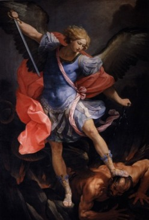
- Angels are part of common beliefs.
From Genesis to Revelation, they are referred
- 103 times in the OT
- 93 times in the NT
- There are different kinds of Angels and there is hierarchy among them.
Archangels like Michael, Gabriel and Raphael have a superior rank and status.
See Tobit 12:15, 4 Ezra, book of Enoch, Daniel 12:1, 10:13...Wikipedia Seven Angels
-
The "Son of Man" too. It is revealed to several Jewish apocalyptic minds.
See next point below "A Heavenly Judge & Apocalyptic Figure"
Wikipedia Angels in JudaismPhilo and the Heavenly Man"There are two kinds of men. The one is Heavenly Man, the other earthly. The Heavenly Man being in the image of God has no part in corruptible substance, or in any earthly substance whatever but the earthly man was made of germinal matter which the writer [of Genesis] calls 'dust'."Philo of Alexandria leg. 1.31.For more details see the Appendix The Jewish Logos: Heavenly BodyPrimal Man & ZoroastrianismThese ideas of spiritual bodies, superior Archangel, Primal Man or Archetypal Man were widespread at that time through many variants. They all came after Zoroastrianism."An increasing number of experts in anthropology, theology and philosophy believe that Zoroastrianism contains the earliest distillation of prehistoric belief in angels."Mary Boyce A History of Zoroastrianism Volume One: The Early Period.See Wikipedia Archangel.Christians Today"The study of angels or the doctrine of angelology is one of the ten major categories of theology developed in many systematic theological works.""So it is possible that between man and God there exist creatures of higher than human intelligence and power. Indeed, the existence of lesser deities in all heathen mythologies presumes the existence of a higher order of beings between God and man, superior to man and inferior to God. This possibility is turned into certainty by the express and explicit teaching of the Scriptures. It would be sad indeed if we should allow ourselves to be such victims of sense perception and so materialistic that we should refuse to believe in an order of spiritual beings simply because they were beyond our sight and touch."Angelology: The Doctrine of Angels bible.org.A Widespread Syncretism"In 167 BCE the Hellenistic monarch Antiochus IV, king of the Seleucid Empire, put down a rebellion in Jerusalem and issued a decree outlawing many Jewish religious and ethnic practices. As part of this decree he outlawed sacrificial offerings in the Temple and circumcision, and he ordered the desecration of the sanctuary, the profaning of the Sabbath and religious festivals, the placement of idols in the Temple, the erection of an altar to Zeus on the Temple grounds, and the sacrifice of traditionally unclean animals such as swine in religious rituals (1 Macc. 1:41–50)."The Myth of Persecution C. MossThe Maccabean revolt of the 160s BCE was a reaction to a Hellenizing trend in Jewish society under the overlordship of the Greek Seleucid kings. When Rome arrived on the Judean scene in 63 BCE, pagan influence became even stronger.Archeology and extant records give us many examples of syncretism between the Jewish and Hellenic worlds.Wikipedia Hellenistic Judaism.Religious Syncretism is also not something special, it happens all the time.The creation of the Septuagint speaks to the influence of Greek culture on Jews in Judea and the Diaspora. The impact of Hellenization on Jews was profound: many Jews spoke Greek, studied in Greek educational institutions, and even donned Greek hats. The NT is written in Greek."All these Jewish Archangels and heavenly Judge up to the Intermediary Son & Logos were divine beings or spirit like all the other pagan gods of the day, or indeed of any day: confined to the supernatural dimension and communicating with believers and spokespersons through inspiration, visions and other spiritual manifestations. This is the way gods have been perceived to interact with the world from time immemorial."E. DohertyAncient MysteriesAfterlife and SalvationThe idea of the afterlife comes from our hopes that there will be something after death and of our fears that there will be nothing.After the Greek Olympian Gods started to fade away, but before any Gospel was written, religious thought in the eastern part of the Roman empire, and more, was dominated by Mystery Religions. The initiate was promised benefits of some kind in the afterlife. The whole process was presented in the resurrection of deities and other figures."The Eleusinian goddess makes us look with joyful hope upon the end of life and upon existence as a whole"Isocrates of Athens"We have learned [from the Eleusinian mysteries] the beginnings of life, and have gained the power not only to live happily, but also to die with better hopes"Cicero De legibus, II"Many scholars and theologians over the years have noted that Saul's birthplace [Tarsus in actual Turkey] and upbringing influenced his vision of Christianity. He would have been aware of the Mithraic cult and their rituals as well as other religions such as the Cult of Hercules, Zoroastrianism, the Cult of Cybele, Manichaeism, the Cult of Isis, and many more."World History Encyclopedia on Tarsus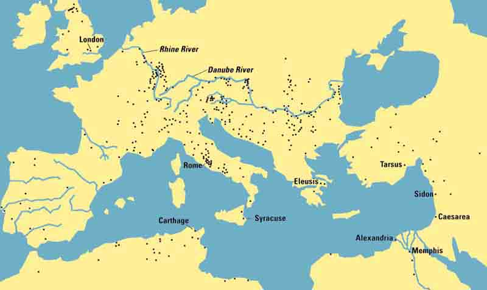
Map of Mithraic sites in the Roman EmpireMap doesn't include these recent discoveries- 2000 - Crypta Balbi, Rome
- 2001 - Aigio, Greece.
- 2002-4 - Güglingen mithraeum II.
- 2003 - Héviz mithraeum, Hungary.
- 2003 - Lugo mithraeum, Spain.
- 2004 - Els Munts mithraeum, Tarragona, Spain.
- 2004 - Santo Stefano ai Lupi (?)
- 2008 - Szombathely, Savaria mithra., Hungary
- 2009 - Veii, Italy.
- 2010 - Inveresk mithraeum, Scotland (UK).
- 2010 - Angers mithraeum, France. (even in my hometown)
- 2010 - Thermes, Greece.
- 2013 - London mithraeum, UK.
- 2013- Carmona mithraeum, Spain
- 2015 - Possible Mithraeum at Bingen in Germany. Article.
- 2015 - New Mithraeum at Kempraten in Switzerland.
- 2017 - New mithraeum discovered at Lucciana in Corsica.
- 2017 - New mithraeum discovered at Zerzevan Castle, Diyarbekir, Turkey
Other Savior Gods also have their own archeologic evidences, see Appendix Non Historical Arguments Nothing New.Death, Rebirth & RitualsDeath & RebirthAll Mystery Religions envision a death of the God (Osiris, Tammuz, Dionysos, Persephone...) or by the God (Mithras slaying the Bull) followed by a resurrection or rebirth. Other cultures like Jainists, Buddhists and Hindus also had examples of resurrection in their beliefs.Sacraments of Baptism & EucharistThey all had rites allowing the initiate to be purified or taste the body and blood of eternal life and be reminded of the divinity sacrifice.We'll come back to that in connection with Jesus in Elements A Dying & Rising Savior and By Baptism & Eucharist.SourcesAs you can see on the map provided above Map of Mithraic sites in the Roman Empire, archaeology has unearthed plenty of religious sites related to Ancient Mysteries.Some records have also survived:- The Eleusinian Mysteries of Demeter and Kore
Homeric Hymn to Demeter
Herodotus History
Aristophanes The Frogs
Plutarch Progress in Virtue
Diodorus Siculus Library of History
Lucian of Samosata Alexander the False Prophet - The Andanian Mysteries of Messenia
Pausanias Description of Greece
Rule of the Andanian Mysteries - The Greek Mysteries of Dionysos & Orphism
Euripides The Bacchae
Livy History of Rome
Achilles Tatius, The Adv. of Leucippe & Clitophon
Pausanias Description of Greece
Rule of the lobacchoi
Plato Republic
Orphic Hymns & Lamella - The Anatolian Mysteries of Cybele & Her Lover Attis
Arnobius of Sicca the Case Against the Pagans
Livy History of Rome
Catullus Poem
Prudentius On the Martyrs' Crowns - The Egyptian Mysteries of Isis and Osiris
Plutarch On Isis & Osiris
Isis Aretalogy from Cyme
Great Magical Papyrus of Paris
Apuleius The Golden Ass
Flavius Josephus Jewish Antiquities - The Roman Mysteries of Mithras
Lucian of Samosata Menippus
Plutarch Life of Pompey
Mithraic Inscriptions of Santa Prisca
Firmicus Maternus The Error of the Pagan Religion
Origen Against Celsus
Porphyry On the Cave of the Nymphs
The Mithra Liturgy
Greek PhilosophiesThe Logos & Personal Wisdom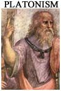
The concept of a Son or Intermediary who was a channel between God and humanity was widespread in the 1st century CE. It existed for many Greek philosophers (see Wikipedia ), Philo of Alexandria and the Old Testament with the Jewish Personal Wisdom (see A Spirit, Revealer & Mediator)."In Stoic philosophy, the logos was the active reason pervading and animating the Universe. It was conceived as material and is usually identified with God or Nature.The Stoics also referred to the seminal logos ("logos spermatikos"), or the law of generation in the Universe, which was the principle of the active reason working in inanimate matter. Humans, too, each possess a portion of the divine logos.The Stoics took all activity to imply a logos or spiritual principle. As the operative principle of the world, the logos was anima mundi to them, a concept which later influenced Philo of Alexandria, although he derived the contents of the term from Plato.""Logos ... had long been one of the leading terms of Stoicism, chosen originally for the purpose of explaining how deity came into relation with the universe"Anglican priest Maxwell Staniforth Marcus Aurelius' Meditations, 1964See also Appendix The Jewish Logos.The Demiurge & Our Corrupted World"The demiurge is an artisan-like figure responsible for fashioning and maintaining the physical universe... The philosophical usage and the proper noun derive from Plato's Timaeus, written c. 360 BCE, where the demiurge is presented as the creator of the universe...In the arch-dualist ideology of the various Gnostic systems, the material universe is evil, while the non-material world is good. According to some strains of Gnosticism, the demiurge is malevolent, as it is linked to the material world. In others, including the teaching of Valentinus, the demiurge is simply ignorant or misguided."In the Bible, it is Satan who ruins the creation after the fact, rather than from the start—a distinction of barely any relevance. The idea that this creation is corrupt and evil and we have to escape is one recurrent theme of the Epistles.See below Anti-Adam & Heavenly Man and A Descending/Ascending Redeemer.Secret Knowledge"It is often used for personal knowledge compared with intellectual knowledge. By the Hellenistic period, it also began to be associated with Greco-Roman mysteries, becoming synonymous with the Greek term musterion. Consequently, Gnosis often refers to knowledge based on personal experience or perception. In a religious context, gnosis is mystical or esoteric knowledge based on direct participation with the divine. In most Gnostic systems, the sufficient cause of salvation is this "knowledge of" ("acquaintance with") the divine."The role of Secret Knowledge (literally, gnosis) in ensuring salvation was also a component of so-called orthodox Christianity as we can see in Paul, Hebrews, Ignatius, Clement of Alexandria, and Origen (see R. Carrier OHJ, Elements 11 & 13, Ch. 4).Following Platonic views that split the universe into a lower material world and a higher invisible and spiritual one considered as the real Truth,"I know that I know nothing" Socrates"If any one imagines that he knows something,1 Corinthians 8:2
he does not yet know as he ought to know."As for Plato's allegory of the cave:"At present all we see is the baffling reflection of reality; we are like men looking at a landscape in a small mirror."1 Corinthians 13:12these Hellenic Jews have considered the highly anticipated Jewish figure of the Messiah as...

Like in 2. A Critical Bug, this chapter doesn't take into account the following passages
because they are fully examined in 6. Debating Possible References to a HJ:
b. Preaching Jesus Christ Was
| The Son of God |
Spirit & Revealer |
The Logos |
Heavenly Judge |
Anti- Adam |
Heavenly Man |
|
|
|||||
The Son of GodThere is a ton of references to Jesus as the Son of God in the Epistles.
Rom. 1:4, 1:9, 5:10, 8:3, 8:29, 2 Cor. 1:19, Gal. 2:20, 4:4, 4:6, Eph. 4:13, Col. 1:15, 3:16,
Heb. 1:3, 1:5, 1:8, 4:14, 5:5, 6:6, 7:3, 10:29,
1 John 3:8, 4:15, 5:1, 5:5, 5:9, 5:10, 5:12, 5:13, 5:20,
2 John 1:9, Rev. 2:18...
"I write these things to you who believe in the name of the Son of God so that you may know that you have eternal life."
1 John 5:13
"Jesus the Son of God, let us hold fast our confession."
Hebrews 4:14
...
But there is no reference that he was also the Son of Mary & Joseph.
All God's Attributes
The Glory of GodThe Image of GodThe Likeness of GodThe First-Born of All CreationThe Co-Creator of the UniverseUpholding the UniverseThe Power of GodThe Wisdom of GodThe Love of GodThrough Whom We Exist All things have been created through him and for himAll things are held together in him
All things have been created through him and for himAll things are held together in himThis pre-existing heavenly intermediary son
- was the first-born of all creation
- helped God create the universe
- is upholding the universe by his word of power
"He reflects the glory of God and bears the very stamp of his nature,
upholding the universe by his word of power."
Hebrews 1:3
"The Son is the image of the invisible God, the first-born of all creation;
for in him all things were created, in heaven and on earth, visible and invisible...
all things have been created through him and for him. And he exists before everything and all things are held together in him".
all things have been created through him and for him. And he exists before everything and all things are held together in him".
Colossians 1:15-17
"Christ the power of God and the wisdom of God."
1 Corinthians 1:24
"yet for us there is one God, the Father,
from whom are all things and for whom we exist, and one Lord, Jesus Christ,
through whom are all things and through whom we exist."
1 Corinthians 8:6
"Christ, who is the likeness of God"
2 Corinthians 4:4
"[nothing]...will be able to separate us from the love of God that is in Christ Jesus our Lord."
Romans 8:39
A Spirit, Revealer & MediatorJesus is also a Spirit that was betowing knowledge on earth through spiritual channels.
"Christ ... is at the right hand of God and is also interceding for us."
Romans 8:34
"We speak of these gifts of God in words found for us
not by human wisdom but by the Spirit"
1 Corinthians 2:13
"It is all God's doing. God has set his seal on us by sending the Spirit."
2 Corinthians 1:22
"God has shaped us for life immortal, and as a guarantee of this he has sent the Spirit"
2 Corinthians 5:5
"Preachers brought you the gospel [not the written Gospels that cam afterwards] in the power of the Holy Spirit sent from
heaven."
1 Peter 1:12
These beliefs correspond to the 2 prominent philosophical-religious concepts of the age:
- The Logos.
- The Jewish Personal Wisdom
"For the Jews, God was never quite so inaccessible, but scribes of the period after the Exile presented God as making himself known and working in the world through a part of himself they called 'Wisdom'".E. Doherty"Thereupon wisdom appeared on earth and lived among men"Baruch 3:37."In wisdom the Lord founded the earth and by understanding he set the heavens in their place."Book of Proverbs 3:19"beside the gates in front of the town, at the entrance of the portals she cries aloud:
"To you, O men, I call, and my cry is to the sons of men. Hear, for I will speak noble things, and from my lips will come what is right; for my mouth will utter truth; wickedness is an abomination to my lips.
... All the words of my mouth are righteous;... Take my instruction instead of silver, and knowledge rather than choice gold;... I, wisdom, dwell in prudence, and I find knowledge and discretion... Pride and arrogance and the way of evil and perverted speech I hate. I have counsel and sound wisdom, I have insight, I have strength... I love those who love me, and those who seek me diligently find me... I walk in the way of righteousness, in the paths of justice, endowing with wealth those who love me, and filling their treasuries. The LORD created me at the beginning of his work, the first of his acts of old. Ages ago I was set up, at the first, before the beginning of the earth. When there were no depths I was brought forth,... Before the mountains had been shaped, before the hills, I was brought forth;... ...then I was beside him, like a master workman; and I was daily his delight, rejoicing before him always, ... rejoicing in his inhabited world and delighting in the sons of men. And now, my sons, listen to me: happy are those who keep my ways. Hear instruction and be wise, and do not neglect it. Happy is the man who listens to me, watching daily at my gates, waiting beside my doors. ... For he who finds me finds life and obtains favor from the LORD; but he who misses me injures himself; all who hate me love death."Book of Proverbs 8:1-36"...she rises from the power of God, a pure effluence of the glory of the Almighty... She is the brightness that streams from everlasting light, the flawless mirror of the active power of God and the image of his goodness... She spans the world in power from end to end, and orders all things benignly."Wisdom of Solomon 7:22-30And also the entire Sirach 24:1-34
The Logos"From the beginning, Christianity has understood itself as the religion of the Logos...
we Christians must be very careful to remain faithful to this fundamental line:
to live a faith that comes from the Logos..."
Cardinal Joseph Ratzinger (Pope Benedict XVI)
A Greek concept integrated by Jewish thinkers then identified with Jesus
"Yahweh, the God of Israel, was solely responsible for creation and had no rivals,
implying Israel's superiority over all other nations. Later Jewish thinkers,
adopting ideas from Greek philosophy, concluded that God's Wisdom, Word and Spirit
penetrated all things and gave them unity. Christianity in turn adopted these ideas
and identified Jesus with the Logos."
The anthropomorphic Logos of Philo of Alexandria (20 BCE-50 CE)

"The Greek, metaphysical concept of the Logos is in sharp contrast to the concept of a personal God
described in anthropomorphic terms typical of Hebrew thought.
Philo made a synthesis of the two systems and attempted to explain Hebrew thought in terms of Greek philosophy
by introducing the Stoic concept of the Logos into Judaism.
In the process the Logos became transformed from a metaphysical entity into
an extension of a divine and transcendental anthropomorphic being and mediator between God and men."
M. Hillar Internet Encyclopedia of
Philosophy
Like the Christ of Paul, the Logos of Philo...
- Resides in Scriptures
- is an Intermediary, Messenger and Mediator between God & Humanity
- Is the Image & Revealer of God
- Is the First-born Son of God
- Helped God create & sustain the universe
- Is mystically revealed through spiritual vision
- is the Expiator of Sins and procures forgiveness and blessings
- can act as the high priest
- is Sent Down to Earth to infiltrate, vivify and Purify our Soul
- prefigures Christian's Trinity inside God's Unicity
All links above go to the appendix page of this chapter about the Epistles: Jesus & the Logos
A Heavenly Judge & Apocalyptic FigureThe "Son of Man" is a figure from Jewish apocalyptic literature.
He was a heavenly Judge with an apocalyptic role that will come down from heaven to earth at the end of time.
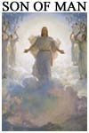
"Now there is in store for me the crown of righteousness, which the Lord, the righteous Judge,
will award to me on that day—and not only to me, but also to all who have longed for his appearing."
2 Timothy 4:8
"For the Lord himself will come down from heaven, with a loud command,
with the voice of the archangel and with the trumpet call of God,
and the dead in Christ will rise first.
After that, we who are still alive and are left will be caught up together
with them in the clouds to meet the Lord in the air."
1 Thessalonians 4:16-17
"I was in the Spirit on the Lord's day, and I heard behind me a great voice, as of a trumpet saying,
What thou seest, write in a book and send [it] to the seven churches: ...
And I turned to see the voice that spake with me. And having turned ...I saw seven golden candlesticks; and in the midst of the candlesticks one like unto a son of man, clothed with a garment down to the foot, and girt about at the breasts with a golden girdle.
And his head and his hair were white as white wool, [white] as snow; and his eyes were as a flame of fire;
and his feet like unto burnished brass, as if it had been refined in a furnace; and his voice as the voice of many waters.
...And he laid his right hand upon me, saying, Fear not; I am the first and the last, and the Living one; and I was dead, and behold, I am alive for evermore, and I have the keys of death and of Hades."
What thou seest, write in a book and send [it] to the seven churches: ...
And I turned to see the voice that spake with me. And having turned ...I saw seven golden candlesticks; and in the midst of the candlesticks one like unto a son of man, clothed with a garment down to the foot, and girt about at the breasts with a golden girdle.
And his head and his hair were white as white wool, [white] as snow; and his eyes were as a flame of fire;
and his feet like unto burnished brass, as if it had been refined in a furnace; and his voice as the voice of many waters.
...And he laid his right hand upon me, saying, Fear not; I am the first and the last, and the Living one; and I was dead, and behold, I am alive for evermore, and I have the keys of death and of Hades."
Revelation 1:10-18
This figure comes from Jewish apocalyptic literature, particularly
Daniel 7, 1 Enoch and 4 Ezra.
"As I watched, thrones were set in place, and an Ancient One took his throne;
his clothing was white as snow, and the hair of his head like pure wool;...
The court sat in judgment, and the books were opened...
As I watched in the night visions, I saw one like a son of man coming with the clouds of heaven. And he came to the Ancient One and was presented before him. To him was given dominion and glory and kingship, that all peoples, nations, and languages should serve him. His dominion is an everlasting dominion that shall not pass away, and his kingship is one that shall never be destroyed... But he said to me, 'Understand, O mortal, that the vision is for the time of the end'".
As I watched in the night visions, I saw one like a son of man coming with the clouds of heaven. And he came to the Ancient One and was presented before him. To him was given dominion and glory and kingship, that all peoples, nations, and languages should serve him. His dominion is an everlasting dominion that shall not pass away, and his kingship is one that shall never be destroyed... But he said to me, 'Understand, O mortal, that the vision is for the time of the end'".
Daniel 7:9-13
"The Lord of spirits sat upon the throne of his glory.
And the spirit of righteousness was poured out over him.
The word of his mouth shall destroy all the sinners and all the ungodly, who shall perish at his presence.
In that day shall all the kings, the princes, the exalted, and those who possess the earth, stand up, behold, and perceive,
that he is sitting on the throne of his glory; that before him the saints shall be judged in righteousness;
And that nothing, which shall be spoken before him, shall be spoken in vain...
...from the beginning the Son of man existed in secret, whom the Most High preserved in the presence
of his power, and revealed to the elect...
They shall fix their hopes on this Son of man, shall pray to him, and petition him for mercy...
And with this Son of man shall they dwell, eat, lie down, and rise up, for ever and ever...
Then I fell on my face before the Lord of spirits. And Michael, one of the archangels,
took me by my right hand, raised me up, and brought me out to where was every secret of mercy and secret of righteousness."
The Book of Enoch chap. 61 and 70
"And I looked, and behold, this wind made something like the figure of a
man come up out of the heart of the sea. And I looked, and behold, that man flew with the clouds of heaven; and wherever he turned his face to look,
everything under his gaze trembled, and whenever his voice issued from his mouth,
all who heard his voice melted as wax melts when it feels the fire."
After this I looked, and behold, an innumerable multitude of men were gathered together from the four winds of heaven
to make war against the man who came up out of the sea...
And I looked, and behold, he carved out for himself a great mountain, and flew up upon it
. ...but I saw only how he sent forth from his mouth as it were a stream of fire, and from his lips a flaming breath, and from his tongue he shot forth a storm of sparks. All these were mingled together, the stream of fire and the flaming breath and the great storm, and fell on the onrushing multitude which was prepared to fight, and burned them all up, so that suddenly nothing was seen of the innumerable multitude but only the dust of ashes and the smell of smoke. When I saw it, I was amazed...
. ...but I saw only how he sent forth from his mouth as it were a stream of fire, and from his lips a flaming breath, and from his tongue he shot forth a storm of sparks. All these were mingled together, the stream of fire and the flaming breath and the great storm, and fell on the onrushing multitude which was prepared to fight, and burned them all up, so that suddenly nothing was seen of the innumerable multitude but only the dust of ashes and the smell of smoke. When I saw it, I was amazed...
After this I saw the same man come down from the mountain and call to him another multitude which was peaceable."
4 Ezra
"Before Jesus, even purely Jewish groups had begun to envision a Messiah figure who was more than human,
someone waiting in heaven for the great day to arrive when he would bring about God's salvation of the righteous."
E. Doherty
The Anti-AdamPaul uses the expression 'anthropos' ('man') for his Christ in three passages:
Rom. 5:12-19, 1 Cor. 15:21-22 and 15:45-49
(also in 1 Tim. 2:5. but not changing anything).
In all three, he is setting up Christ as a heavenly antithesis to an earthly Adam.
His main concern is to create parallels and contrast.
"thus it is written, the first man Adam became a living soul; the last Adam a life-giving spirit...
The first man was from the earth, a man of dust; the second man is from heaven."

1 Corinthians 15:45-47
See "Heavenly Man" below for an extended quote 1 Cor. 15:40-49
"Nevertheless, death reigned from the time of Adam to the time of Moses,
even over those who did not sin by breaking a command,
...
as did Adam, who is a pattern of the one to come...
Nor can the gift of God be compared with the result of one man's sin:
The judgment followed one sin and brought condemnation, but the gift followed many trespasses and
brought justification.
For if, by the trespass of the one man, death reigned through that one man,
how much more will those who receive God's abundant provision of grace and of the gift
of righteousness reign in life through the one man, Jesus Christ!"
For just as through the disobedience of the one man the many were made sinners, so also through the obedience of the one man the many will be made righteous."
For just as through the disobedience of the one man the many were made sinners, so also through the obedience of the one man the many will be made righteous."
Romans 5:12-19
"For as in Adam all die, so in Christ all will be made alive."
1 Corinthians 15:21-22
Adam himself was in current Jewish thought a larger-than-life figure (see Philo), almost mythological.
Both, for Paul, are representative figures, not historical individuals.
The two entities are clearly assigned in two exclusive worlds:
Adam to the physical side, Christ to the spiritual side.
In this context, Paul's theology brings us salvation by making the redeeming act of Christ
in heaven superseding the original sin on earth.
Expressed this way, it is very difficult to see Christ assigned, at any time, to the physical side.
A Heavenly Man with a Spiritual BodyWhile comparing Adam to Christ, Paul also tells us that the
body of Jesus is purely heavenly and spiritual and that
we, as humans, will be 'raised' in this kind of matter/stuff after we die.
"There are also heavenly bodies and earthly bodies;
but the glory of the heavenly is one kind and that of the earhly another....
1 Corinthians 15:40-49
but the glory of the heavenly is one kind and that of the earhly another....
| The body that is sown is perishable | it is raised imperishable; |
| it is sown in dishonor | it is raised in glory; |
| it is sown in weakness | it is raised in power; |
| it is sown a natural body | it is raised a spiritual body |
| If there is a natural body | there is also a spiritual body |
And so it is written,
| "The first Adam was created to have a living nature." | The second Adam to be a life-giving spirit. |
| However, the spiritual is not first, but the natural | and afterward the spiritual. |
| The first man was of the earth, made of dust; | the second Man is the Lord from heaven. |
| As was the man of dust, so also are those who are made of dust; | and as is the heavenly Man, so also are those who are heavenly. |
| And as we have borne the image of the man of dust, | we[d] shall also bear the image of the heavenly Man." |
Jesus is clearly again on the spiritual & heavenly side,
without a trace of dust on him!
An Archangel Origin
Its origin can be traced back to the angels/messengers of the Hebrew Bible :
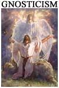
"The Jewish Heavenly Man probably evolved from earlier mythology regarding angelic delegates and messengers from God.
They were the original medium of God's revelation and the instrument by which he controlled and communicated with the world.
In early books of the Hebrew bible, these messengers are designated "the angel of the Lord"
(Gen. 22:11-12, Exod. 23:20-23).
Following the Babylonian Exile and its Zoroastrian influence, primary angels (archangels) began to
emerge, with names like Gabriel and Michael.
These intermediary angels were in part a Hebrew equivalent to the Primal Man concept in other nations."
E. Doherty Jesus Neither God Nor Man
We have seen in Religious Context Jewish Angelogy above that the Bible, is full of angels.
There are 103 references in the OT and 93 in the NT. There is also a hierarchy among them.
Moreover, this Heavenly Man of the Epistles can be found almost word by word the same,
and at the same time, in a Greek Jew, Philo of Alexandria:
"There are two kinds of men. The one is Heavenly Man, the other earthly."
For more details see the Appendix The Jewish Logos: Heavenly Body
Epistles Archangels
"For the Lord himself shall descend from heaven with a shout, with the voice of the archangel,
and with the trump of God: and the dead in Christ shall rise first"
1 Thessalonians 4:16
"Yet Michael the archangel, when contending with the devil he disputed about the body of
Moses, durst not bring against him a railing accusation, but said, The Lord rebuke thee."
Jude 9
"And I saw the seven angels which stood before God; and to them were given seven trumpets."
Revelation 8:2, 9:11
Some evidence suggests that these angels not only evolved into a Heavenly Man, but into Christ himself.
Christ would then be at the top of this
hierarchy of Angels.
Justin Martyr regarded scriptural references to the Angel of God to be referring to Christ
in his pre-incarnation state:
"Moreover, in the book of Exodus we have also perceived that the name of God Himself which, He says,
was not revealed to Abraham or to Jacob, was Jesus, and was declared mysteriously through Moses.
Thus it is written: ‘And the Lord spake to Moses, Say to this people, Behold, I send My angel
before thy face, to keep thee in the way, to bring thee into the land which I have prepared for thee.
Give heed to Him, and obey Him; do not disobey Him. For He will not draw back from you;
for My name is in Him.’
Now understand that He who led your fathers into the land is called by this name Jesus, and first called Auses (Oshea).
For if you shall understand this, you shall likewise perceive that the name of Him who said to Moses,
‘for My name is in Him,’ was Jesus."Dialogue with Trypho, 75
Similarly, the Ebionites testify of a pre-Gospel tradition about the derivation of Jesus:
"They say that he (Christ) was not begotten of God the Father, but created as one of the archangels...
that he rules over the angels and all creatures of the Almighty, and that he came and declared, as their Gospel,..."
Epiphanius Haer 30.26, 4f quoting the lost Gospel of the Ebionites
While the first apostles were preaching this heavenly Jesus,
they never mention any historical info that would have identified this savior
with the man we find later on in the Gospels:
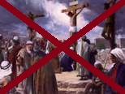
A recent man in the area"If Jesus had been on earth, he would not even have been a priest."
Hebrews 8:4
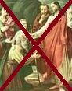
Jesus of NazarethThe word 'Nazareth' never appears in the Epistles, as everything else related to the career of Jesus on earth.
See Vocabulary Evolution of Christian Records in chapter 2. A Critical Bug.
- A Hero Founder and Role Model
- A new Moses-Elijah-Elisha
- Born in Bethlehem to Mary
- 40 days in the desert
- Baptized and Transfigured
- A Performer of Miracles
- A Wandering Cynic Philosopher
- An Apocalyptic Prophet of the Kingdom
c. Preaching an Act of Salvation
| Forever High Priest |
A Desc./Asc. |
Dying & Rising Savior |
||||
|
||||||
Forever High PriestIn the Epistle of Hebrews, Jesus has been turned into a Forever High Priest.
The author is making a contrast between the sacrifice of Jesus in heaven and the one performed by Melchizedek,
traditionnally seen as part of a pre-Abrahamic dynasty of priest-kings.
This is a very unique way of describing the celestial Jesus.
"so that he could become a merciful and faithful high priest in things relating to God, to make atonement for the sins of the people."
Hebrews 2:17
"Seeing then that we have a great High Priest who has passed through the heavens,
Jesus the Son of God, let us hold fast our confession.
For we do not have a High Priest who cannot sympathize with our weaknesses,
but was in all points tempted as we are, yet without sin."
Hebrews 4:14-16
"As He also says in another place:
“You are a priest forever According to the order of Melchizedek”; (Psalm 110:4)
who, in the days of His flesh, when He had offered up prayers and supplications,
with vehement cries and tears to Him who was able to save Him from death,
and was heard because of His godly fear, though He was a Son, yet He learned obedience by the things which He suffered.
And having been perfected, He became the author of eternal salvation to all who obey Him,
called by God as High Priest “according to the order of Melchizedek,”
of whom we have much to say, and hard to explain,
since you have become dull of hearing."Hebrews 5:6-11
"For it is declared:
... And it was not without an oath! Others became priests without any oath, but he became a priest with an oath when God said to him:
“The Lord has sworn and will not change his mind:
“You are a priest forever, in the order of Melchizedek.”Psalm 110:4
The former regulation is set aside because it was weak and useless (for the law made nothing perfect),
and a better hope is introduced, by which we draw near to God.... And it was not without an oath! Others became priests without any oath, but he became a priest with an oath when God said to him:
“The Lord has sworn and will not change his mind:
‘You are a priest forever.’”Psalm 110:4
Because of this oath, Jesus has become the guarantor of a better covenant.
Now there have been many of those priests, since death prevented them from continuing in office;
but because Jesus lives forever, he has a permanent priesthood.
Therefore he is able to save completely those who come to God through him, because he always lives to intercede for them.
Such a high priest truly meets our need—one who is holy, blameless, pure, set apart from sinners, exalted above the heavens.
...
Unlike the other high priests, he does not need to offer sacrifices day after day, first for his own sins, and then for the sins of the people.
He sacrificed for their sins once for all when he offered himself. For the law appoints as high priests men in all their weakness;
but the oath, which came after the law, appointed the Son, who has been made perfect forever."
Hebrews 7:11-28
The Logos too was said to be the Expiator of Sins and to procure Forgiveness and Blessings.
When acting as the high priest, he softens punishments by making the merciful power stronger than the punitive.
"For it was indispensable that the man who was consecrated to the
Father of the world [the high priest]
should have as a paraclete, his son, the being most perfect in all virtue,
to procure forgiveness of sins, and a supply of unlimited blessings."
De Vita Mosis 2.134
De Vita Mosis 2.134
See The Jewish Logos
A Descending/AscendingDesc./Asc. Redeemer
By reversing the original Sin, Christ was indeed a redeemer.
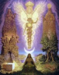
"In certain circles of ancient Jewish angelology, both BCE and the first and second centuries CE,
there existed a mythology with a descent-ascent pattern, in which the redeemer figure descends, takes human form,
and then ascends back to heaven either after or in connection with his saving activity."
Charles H. Talbert The Myth of a Descending-Ascending Redeemer in Mediterranean Antiquity
"In Hellenistic Judaism, this Jewish motif is becoming merged with the Greek Logos, until one arrives at the concept
of an intermediary emanation of God impacting on the world..."
E. Doherty
The details of the stories could vary, but a recurrent pattern was that something was 'broken' in our world
so a Beloved one will come from heaven to free the souls of the dead and take them to heaven.
For Paul and other Jews, the Original Sin was that broken thing (see "Anti-Adam" above).
Epistles
" But to each one of us grace has been given as Christ apportioned it. This is why it says:
“When he ascended on high, he took many captives and gave gifts to his people.” (Psalm 68:18)
(What does “he ascended” mean except that he also descended to the lower, earthly regions?
He who descended is the very one who ascended higher than all the heavens, in order to fill the whole universe.)"
“When he ascended on high, he took many captives and gave gifts to his people.” (Psalm 68:18)
(What does “he ascended” mean except that he also descended to the lower, earthly regions?
He who descended is the very one who ascended higher than all the heavens, in order to fill the whole universe.)"
Ephesians 4:7-10
"Then in the fullness of time, God sent his Son...
in order that he might purchase freedom for the subjects of the Law, so that we might attain the status of sons."
Galatians 4:4-7
"After being made alive in the spirit, he went and made proclamation to the imprisoned spirits—
to those who were disobedient long ago when God waited patiently in the days of Noah...""
1 Peter 3:19
"He who was manifest/revealed in flesh, vindicated in spirit,
seen by angels;...glorified in high heaven."
1 Timothy 3:16
"But we see Jesus, who was made a little lower than the angels for the suffering of death,
crowned with glory and honour; that he by the grace of God should taste death for every man."
Hebrews 2:9
Jewish
The Ascension of Isaiah is a Jewish text for which the first layers can be dated to the end of the 1st Century.
God commands to the So:
"And I heard the voice of the Most High, the Father of my Lord, as he said to my
Lord Christ, who will be called Jesus,
"Go out and descend through all the heavens. You shall descend through the firmament and through that
world as far as the angel who (is) in Sheol,
but you shall not go as far as Perdition.
...
And you shall make your likeness like that of all who (are) in the five heavens,
and you shall take care to make your form like that of the angels of the firmament and also (like
that) of the angels who (are) in Sheol.
And none of the angels of that world shall know that you (are) Lord with me of the seven heavens and of their angels.
For they have denied me and said, 'We alone are, and there is no one beside us.'
And afterwards you will ascend from the angels of death to your place, and this time you will not be transformed in each heaven,
but in glory you will ascend and sit on My right hand.
And the princes and powers of this world will worship you."
The descent of the Son:
And thus I saw when my Lord went out from the seventh heaven into the sixth heaven.
And the angel who had led me from this world was with me, and he said to me,
"Understand, Isaiah, and look, that you may see the transformation and descent of the Lord."
...And I saw when he descended into the fifth heaven, that in the fifth heaven he made his form like that of the angels there,
and they did not praise him, for his form was like theirs.
[... and again for each heaven down to the first, having to give a password to enter starting the third
heaven...]
And again he descended into the firmament where the prince of this world dwells,
and he gave the password to those who (were) on the left, and his form (was) like theirs,
and they did not praise him there; but in envy they were fighting one another,
for there is there a power of evil and envying about trifles.
And I saw when he descended and made himself like the angels of the air, that he was like one of them.
And he did not give the password, for they were plundering and doing violence to one another.
Ascension of Isaiah chapter 10, verses 7-31
See also the Odes of Solomon in chapter 5. Jesus Outside the Bible
Gnostic
- the Naassene hymn
- the hymn of the Pearl
- the Mandean
- the Manichean
- the Apocalypse of Adam
- the Second Logos of the Great Seth
And the one choosen below, The Paraphrase of Shem:
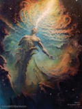
"What Derdekeas revealed to me, Shem, according to the will of the Majesty."
...
[8] And the voice of the Word was heard saying through the Majesty to the unbegotten Spirit,
"Behold, the power has been completed. He who was revealed by me appeared in the Spirit. Again I shall appear. I am Derdekeas, the son of the incorruptible, infinite Light."
...
[12] my likeness, the son of the Majesty, is from my infinite Thought, since I am for him a universal likeness which does not lie, (and) I am above every truth and origin of the word. His appearance is in my beautiful garment of light which is the voice of the immeasurable Thought... For by the will of the great Light I came forth from the exalted Spirit down to the cloud of the Hymen without my universal garment... And my likeness was covered with the light of my garment
...
[15] Therefore I appeared that I might get an opportunity to go down to the nether world, to the light of the Spirit which was burdened, that I might protect him from the evil of the burden.
...
[17] I went into the middle region and put on the light that was in it,
...
[18] Then, by the will of the Majesty, I took off my garment of light. I put on another garment of fire which has no form, which is from the mind of the power, which was separated, and which was prepared for me, according to my will, in the middle region. For the middle region covered it with a dark power in order that I might come and put it on. ... I went down to chaos to save the whole light from it. For without the power of darkness I could not oppose Nature.
...
[26] Return henceforth, O Shem, and rejoice [greatly] over your race and Faith, for without body and necessity it is protected from every body of Darkness, bearing witness to the holy things of the greatness which was revealed to them in their thought by my will.... And likewise what I shall say to you concerning everything, I shall reveal to you completely that you may reveal them to those who will be upon the earth the second time.
...
[32] This is the paraphrase: – For you did not remember that it is from the firmament that your race has been protected. – Elorchaios is the name of the great Light, the place from which I have come, the Word which has no equal. And the likeness is my honored garment. And Derdekeas is the name of his Word in the voice of the Light.
...
[36] It is I who opened the eternal gates which were shut from the beginning. To those who long for the best of life, and those who are worthy of the repose, he revealed them. I granted perception to those who perceive. I disclose to them all the thoughts and the teaching of the righteous ones. And I did not become their enemy at all. But when I had endured the wrath of the world, I was victorious. There was not one of them who knew me. The gates of fire and endless smoke opened against me. All the winds rose up against me. The thunderings and the lightning-flashes for a time will rise up against me. And they will bring their wrath upon me. And on account of me according to the flesh, they will rule over them according to kind."
...
[8] And the voice of the Word was heard saying through the Majesty to the unbegotten Spirit,
"Behold, the power has been completed. He who was revealed by me appeared in the Spirit. Again I shall appear. I am Derdekeas, the son of the incorruptible, infinite Light."
...
[12] my likeness, the son of the Majesty, is from my infinite Thought, since I am for him a universal likeness which does not lie, (and) I am above every truth and origin of the word. His appearance is in my beautiful garment of light which is the voice of the immeasurable Thought... For by the will of the great Light I came forth from the exalted Spirit down to the cloud of the Hymen without my universal garment... And my likeness was covered with the light of my garment
...
[15] Therefore I appeared that I might get an opportunity to go down to the nether world, to the light of the Spirit which was burdened, that I might protect him from the evil of the burden.
...
[17] I went into the middle region and put on the light that was in it,
...
[18] Then, by the will of the Majesty, I took off my garment of light. I put on another garment of fire which has no form, which is from the mind of the power, which was separated, and which was prepared for me, according to my will, in the middle region. For the middle region covered it with a dark power in order that I might come and put it on. ... I went down to chaos to save the whole light from it. For without the power of darkness I could not oppose Nature.
...
[26] Return henceforth, O Shem, and rejoice [greatly] over your race and Faith, for without body and necessity it is protected from every body of Darkness, bearing witness to the holy things of the greatness which was revealed to them in their thought by my will.... And likewise what I shall say to you concerning everything, I shall reveal to you completely that you may reveal them to those who will be upon the earth the second time.
...
[32] This is the paraphrase: – For you did not remember that it is from the firmament that your race has been protected. – Elorchaios is the name of the great Light, the place from which I have come, the Word which has no equal. And the likeness is my honored garment. And Derdekeas is the name of his Word in the voice of the Light.
...
[36] It is I who opened the eternal gates which were shut from the beginning. To those who long for the best of life, and those who are worthy of the repose, he revealed them. I granted perception to those who perceive. I disclose to them all the thoughts and the teaching of the righteous ones. And I did not become their enemy at all. But when I had endured the wrath of the world, I was victorious. There was not one of them who knew me. The gates of fire and endless smoke opened against me. All the winds rose up against me. The thunderings and the lightning-flashes for a time will rise up against me. And they will bring their wrath upon me. And on account of me according to the flesh, they will rule over them according to kind."
On his ascension back to the higher realms, Derdekeas will put on a garment of glory, to be exalted for what he has done.
"The attack of Darkness and the subsequent bondage and salvation of the light of the Spirit are similar to the struggle
between Darkness and Primal Man in the Manichaean myth. In both cases, Darkness is associated with fire, wind and water.
The armor of Primal Man reminds one of the garments that Derdekeas wears during his descent through the spheres down to chaos.
The role of Derdekeas combines some aspects of Primal Man and the Living Spirit in the Manichaean myth."
Frederik Wisse
Hellenic
The Descent of Attis
"from that creator we distinguish Attis, the cause which descends even unto matter,
and we believe that Attis or Gallus is a god of generative powers.
...But when he passed beyond this limit and came even to the lowest region, the myth said that he had descended into the cave,
and had wedded the nymph. And the nymph is to be interpreted as the dampness of matter;
though the myth does not here mean matter itself, but the lowest immaterial cause which subsists prior to matter.
...And this shows that in all things the conversion to the higher is more effective than the propensity to the lower.
This is what the myth aims to teach us when it says that the Mother of the Gods exhorted Attis not to leave her or to love another.
But he went further, and descended even to the lowest limits of matter.
...And Attis encircles the heavens like a tiara, and thence sets out as though to descend to earth
...Attis then was declared to be an original cause and a god, the direct creator of the material world,
who descends to the lowest limits and is checked by the creative motion of the sun so soon as that god reaches
the exactly limited circuit of the universe, which is called the equinox because of its effect in equalising night and day."
Julian the Apostate Orations V
The Descent of Inanna
We also have Inanna’s (or Ishtar) Descent to the Underworld" given on pages 66-75 of The Literature of Ancient Sumer.
See World History Encyclopaedia Online Traduction by M. Jastrow
See World History Encyclopaedia Online Traduction by M. Jastrow
Jupiter & Mercury
Not quite 'redeemer' but Gods were often coming down to earth from heaven to give
miraculous aid to people.
"There is a swamp not far from there, once habitable land but now the haunt of
diving-birds and marsh-loving coots.
Jupiter went there, disguised as a mortal, and Mercury, the descendant of Atlas, setting aside his
wings, went with his father, carrying the caduceus..."
Ovid Metamorphoses 8:626
A Dying & Rising Savior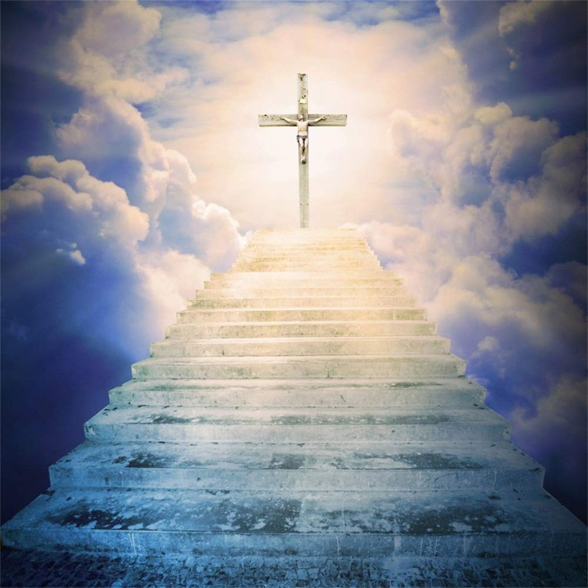
Swimming in this ancient Jewish cosmology and a Hellenic world of Mystery Religions,
for many, but not all, Jesus was also an agent of salvation through a myth of death and resurrection,
as the name suggests (Jesus means 'Yahweh saves' in Hebrew).
- The eight times Paul referred to the "crucifixion" of Jesus are only mystical or metaphoric.See Tab Metaphoric Crucifixion in chapter 2. A Critical Bug in Mainstream Scenario
-
Same for other references of his death in the Epistles:"On the cross he discarded the cosmic powers and authorities like a garment;
he made a public spectacle of them and led them as captives in his triumphal procession."Colossians 2:15"a fight ... against cosmic powers, authorities and potentates of this dark world, the superhuman forces of evil in the heavens"Ephesians 6:12Or his sacrificial nature:"He saved us through the washing of rebirth and renewal by the Holy Spirit, whom he poured out on us generously through Jesus Christ our Savior,..."Titus 3:5-6This sacrifice that implies a death & rebirth has a lot in common with those of the Ancient Mysteries.Dying & Rising in Ancient Mysteries"Like the grain, Kore returns mythically to the land of the living from her yearly sojourn in the realm of Hades.Osiris exists in the realm of the dead as the ruler of that realm, and the "grain Osiris" proclaims the growth or rebirth of grain and of Osiris. When Lucius is initiated into the mysteries of Isis, according to Apuleius, he undergoes a nocturnal death experience by passing through the realm of death, the realm of Osiris, and emerging in the morning, dressed like the rising sun, to celebrate his initiation after the manner of a birthday.Archeological monuments show the Mithraic bull also anticipating new life, and heads of grain grow from the dying bull. The Mithraic inscriptions from Santa Prisca include references to one that "is piously reborn and created by sweet things." Similar references to rebirth are to be found in Apuleius, in the inscription of 376 C.E. on the tnitrobolium and criobolium, and in the Mithras Liturgy.Attis too provides a hint of new life after his death: his body does not decay, his hair continues to grow, and his little finger (his penis?) remains in motion. During the spring the death of Attis is observed on the Day of Blood, and new life may be celebrated in the Hilaria."M. Meyer The Ancient MysteriesDying & Rising DivinitiesDivinities who are born, suffer death-like experience, and are subsequently reborn, in either a literal or symbolic sense:- Aboriginal mythology
- Julunggul
- Wawalag
- Akkadian mythology
- Tammuz
- Ishtar
- Arabian mythology
- Phoenix
- Aztec mythology
- Quetzalcoatl
- Xipe Totec
- Celtic mythology
- Cernunnos
- Dacian mythology
- Zalmoxis
- Egyptian mythology
- Isis
- Osiris
- Etruscan mythology
- Atunis
- Greek mythology
- Adonis
- Cronus
- Cybele
- Dionysus
- Orpheus
- Persephone
- Hindu mythology
- Trimurti
- Brahma
- Vishnu
- Siva
- Khoikhoi mythology
- Heitsi
- Native American mythology
- Kaknu
- Norse mythology
- Odin
- Balder
- Gullveig
- Roman mythology
- Aeneas
- Bacchus
- Proserpina
- Slavic mythology
- Veles
- Jarilo
- Sumerian mythology
- Damuzi
- Inanna
- Phrygian mythology
- Attis
-
Christian mythology
- Jesus
However, this savior trait was not shared by all of them:- the Epistle of James and 1 John (excepted one allusion in its latest layer)
- the Didache, Odes of Solomon and Shepherd of Hermas
- and several second century apologists where it is not mentioned.
- Aboriginal mythology
While the first apostles were preaching this mythical passion,
they were also missing all historical info that would have identified this crucifixion
with the one we find later on in the Gospels:
Betrayed & Doubts in GethsemaneTrial by the SanhedrinPontius Pilate or any RomanAny Jewish Mob, Beating, Barabbas...Jesus's Impassible Behavior & Words on the Cross...An Earthquake, Dark Sky, Empty Tomb...
See tab No Passion Story in chapter "2. A Critical Bug in Mainstream Scenario".
Passion Story in chapter "2. A Critical Bug in Mainstream Scenario".
d. How? - By
| Visiting the Heavens |
Visions & Scriptures |
Being Possessed |
Baptism & Eucharist |
Gradual Elevation |
Slow Progress |
|
|
|||||
By Visiting the HeavensDuring his conversion, Paul tells us he visited the 3rd heaven.
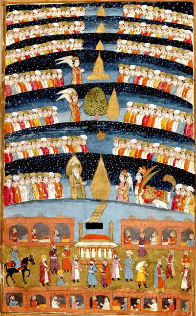
"I know a man in Christ who fourteen years ago was caught up to the third heaven.
Whether it was in the body or out of it I do not know, but God knows.
And I know that this man-whether in the body or out of it I do not know,
but God knows- was caught up to Paradise.
The things he heard were too sacred for words, things that man is not permitted to tell."
2 Corinthians 12.2-4
Many (if not most) Jews believed that the heavens existed and were split in several layers.
The clouds were the midway point between the heavens and earth and were populated by many different beings,
including angels, demons, creatures in 'human forms', cities, fire & ice, armies and chariots, a "prison house of the angels",
prisoners hanging and awaiting judgment, mountains and rivers, trees...
Each layer is different and God sits in the last one.
People on earth could travel to these heavens or have visions of events taking place there.
Sources: Book of Enoch, Book of Daniel, Apocalypse
of Elijah, Book of Zechariah, Apocalypse of Zephaniah,
Martyrdom of Isaiah, Ascension of Isaiah...
"And a spirit took me and brought me up into the fifth heaven.
And I saw angels who are called "lords."
And the diadem was set upon them in the Holy Spirit, and the throne of each of them
was sevenfold more brilliant than the light of the rising sun.
And they were dwelling in the temples of salvation and singing hymns to the ineffable God.
...I saw a soul which five thousand angels punished and guarded.
They took it to the East and they brought it to the West.
They beat its back with flaming whips and they gave it a hundred fiery lashes for each one daily.
I was afraid and I cast myself upon my face so that my joints dissolved.
The angel helped me. He said unto me, "Be strong, O one who will triumph,
and prevail so that thou wilt triumph over the accuser and thou wilt come up from Hades."
And after I arose I said, "Who is this whom they are punishing?"
He said unto me, "This is a soul which was found in its lawlessness."
And before it attained to repenting it was visited, and taken out of its body.
Truly, I, Zephaniah, saw these things in my vision.
But I went with the angel of the Lord, and I looked in front of me and I saw gates.
Then when I approached them I discovered that they were bronze gates.
The angel touched them and they opened before him.
I entered with him and found its whole square like a beautiful city, and I walked in its midst.
Then the angel of the Lord transformed himself beside me in that place.
...Then I arose and stood, and I saw a great angel standing before me with his face shining like the rays of the sun in its glory since his face is like that which is perfected in its glory. And he was girded as if a golden girdle were upon his breast. His feet were like bronze which is melted in a fire. And when I saw him, I rejoiced, for I thought that the Lord Almighty had come to visit me. I fell upon my face, and I worshiped him. He said to me, "Take heed. Worship me not. I am not the Lord Almighty, but am the great angel, Eremiel, who is over the abyss and Hades, the one in which all of the souls are imprisoned from the end of the Flood, which came upon the earth, until this day."
...
Then the great angel came to me with the golden trumpet in his hand, and he blew it up unto heaven.
Heaven opened from the place where the sun rises to where it sets, from the north to the south.
...And I saw others with their hair on them. I said, "Then there is hair and body in this place?"
He said, "Yes, the Lord gives body and hair to them as he desires....
I said, "O Lord, why left thou me not until I saw them all?"
He said unto me, "I have not authority to show them unto thee until the Lord Almighty riseth up in his wrath to destroy the earth and the heavens. They will see and be disturbed, and they will all cry out, saying, "All flesh which is ascribed to Thee we will give unto Thee on the day of the Lord." Who will stand in His presence when He riseth in His wrath [to destroy] the earth [and the heavens] Every tree which groweth upon the earth will be plucked up with its roots and fall down...."
He said unto me, "I have not authority to show them unto thee until the Lord Almighty riseth up in his wrath to destroy the earth and the heavens. They will see and be disturbed, and they will all cry out, saying, "All flesh which is ascribed to Thee we will give unto Thee on the day of the Lord." Who will stand in His presence when He riseth in His wrath [to destroy] the earth [and the heavens] Every tree which groweth upon the earth will be plucked up with its roots and fall down...."
Apocalypse of Zephaniah ~1st century BCE to 1st century CE
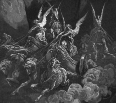
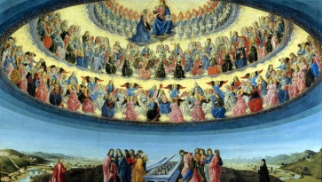
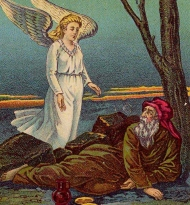
By Visions & ScripturesRe-Interpreting the Hebrew Scriptures
It is the sacred writings which have created the picture of the spiritual Christ and determined many of his features.
Through the Scriptures and the agency of the Holy Spirit, God has revealed to apostles like Paul
the existence of his Son and the role he has played in the divine plan for salvation.
Old Testament texts became stories about Jesus.
These early writers talk of long-hidden secrets being disclosed for the first time,
with no mention of an historical Jesus who played any part in revealing himself,
thus leaving no room for a human man at the beginning of the Christian movement.
Paul tells us quite clearly that he has derived his information and gospel
about the Christ from the scriptures:
"the gospel he [God] promised beforehand through his prophets in the Holy Scriptures regarding his Son,"
Romans 1:1-2
"...according to the revelation of the mystery,
[which can mean 'as we learn from the scriptures.']kept in silence for long ages
but now revealed, and made known through prophetic writings at the command of God"
Romans 16:25-26
"Paul, called to be an apostle of Christ Jesus by the will of God, and our brother Sosthenes,"
1 Corinthians 1:1
"Paul, an apostle of Christ Jesus by the will of God, and Timothy our brother,"
2 Corinthians 1:1
"...our competence comes from God. He has made us competent as ministers of a new covenant..."
2 Corinthians 3:6
"...we will confine our boasting to the sphere of service God himself has assigned to us..."
2 Corinthians 10:13
"I have become its servant by the commission God gave me to present to you the word of God in its fullness"
Colossians 1:25
"On the contrary, we speak as those approved by God to be entrusted with the gospel."
1 Thessalonians 2:4
"he [God] has brought to light through the preaching entrusted to me by the command of God our Savior,"
Titus 1:3
...1 Pet. 1:10-12, 1 Cor. 12:28, 2 Cor. 1:22, Col. 2:2-3, Eph. 3:5...
See also Visions of Resurrection in chapter "2. A Critical Bug in Mainstream Scenario".
Christ died for our sins
|
For I delivered to you as of first importance what I also received [from God],
that Christ died for our sins in accordance with the scriptures"
1 Corinthians 15:3 |
"He bears our sins, and is pained for us.
But he was wounded on account of our sins, bruised because of our iniquities. ...
All we as sheep have gone astray, everyone has gone astray in his way,
and the Lord [delivered him up] for our sins because his soul was delivered up to death ...
and he bore the sins of many and was delivered because of their iniquities."
Isaiah 53
|
And was raised on the third day |
|
"that he was buried, that he was raised on the third day in accordance with the scriptures"
1 Corinthians 15:4
|
"After two days he will heal us, on the third day he will restore us."
Hosea 6:2
The story of Jonah also speaks of a rescue from the fish's belly after three days and three nights.
|
The manner of Christ's death
| Isaiah 53:5 | The "wounded" of above is sometimes
translated "pierced."
"But he was pierced for our transgressions,"
|
| Psalm 119:120 (Septuagint) |
contains the phrase "penetrate my flesh with thy fear." The verb in some contexts means "fasten with nails." |
| Psalm 22:16 | "they have pierced my hands and my feet." |
| Zechariah 12:10 | (speaking of a person in his own time) links the piercing with a "son":
"They shall look on ... him whom they have pierced...
and shall wail over him as over an only child,
and shall grieve for him bitterly as for a first-born son."
|
The Gospel of John 19:37 calls attention to this verse of
Zechariah as a text in scripture which Christ has fulfilled.
What lies behind John's statement, however, is that verses
like Zechariah 12:10 are the source for the `fact' that Jesus had been crucified.
One of the features of scriptural study in this period was the practice
of taking individual passages and verses, bits and pieces from here and there,
and weaving them into a larger whole. Such a sum was much greater than its parts.
This is one of the key procedures of "midrash,"
a Jewish method of interpreting the sacred writings.
This bringing together of widely separate scriptural references and deriving meanings
and scenarios from their combination was the secret to creating the early Christian message.
Scripture did not contain any full-blown crucified Messiah, but it did contain all the necessary ingredients.
Jewish midrash was the process by which the Christian recipe was put together
and baked into the doctrine of the divine Son who had been sacrificed for salvation.
Everything from Earl Doherty Jesus Puzzle
Paul has seen Jesus like the others
In fact, he claims that he has "seen" the Lord, just as Peter
and everyone else have. This is an obvious reference to visions, one of the standard modes of religious revelation in this period.
And as Paul's "seeing" of the Lord is acknowledged to have been a visionary one (2 Corinthians 12),
his comparison of himself with the other apostles suggests that their contact with Jesus was of the same nature: through visions.
"Am I not free? Am I not an apostle? Have I not seen Jesus our Lord?
Are you yourselves not my workmanship in the Lord?"
1 Corinthians 9:1
"And last of all He appeared to me also, as to one of untimely birth"
1 Corinthians 15:8
The others have nothing to addAnd how could Paul, in Galatians 2:6,
dismiss with such disdain those who had been the very followers of Jesus himself on earth?
But in granting them no special status he is not alone.
"As for those who were held in high esteem
—whatever they were makes no difference to me;
God does not show favoritism—
they added nothing to my message."
Galatians 2:6
"Paul's only experience of Jesus was clearly through his ecstatic visions.
To judge from his writings (1 Cor 15) he assumed that his fellow apostles had had experiences of the same kind.
He certainly does not feel inferior to them on that score. But if none of the apostles had ever seen Jesus,
the natural conclusion is that Jesus cannot have been contemporary with any of them."
Alvar Ellegård Theologians as historians
By Being Possessed by ChristFirst Christians interpreted experiences to indicate that external
personae entered them to dwell in them and acted through them,
which is the ordinary possessionist perspective.
"I have been crucified with Christ;
it is no longer I who live, but Christ who lives in me"
Galatians 2:20
"(God) had called me through his grace,
and was pleased to reveal his Son to me,"
Galatians 1:16
"since you desire proof that Christ is speaking in me"
2 Corinthians 13:3
"And we are in him who is true by being in his Son Jesus Christ."
1 John 20
"the prophets...trying to find out the time and circumstances to which the Spirit of Christ in them was pointing
when he predicted the sufferings of the Messiah and the glories that would follow."
1 Peter 1:10
They have personal conversation with Jesus in their heads but quote them as if they were real.
"Therefore, in order to keep me from becoming conceited,
I was given a thorn in my flesh, a messenger of Satan, to torment me.
Three times I pleaded with the Lord to take it away from me.
But he said to me,
“My grace is sufficient for you, for my power is made perfect in weakness.”
But he said to me,
“My grace is sufficient for you, for my power is made perfect in weakness.”
Therefore I will boast all the more gladly about my weaknesses,
so that Christ’s power may rest on me. That is why, for Christ’s sake,
I delight in weaknesses, in insults, in hardships, in persecutions, in difficulties.
For when I am weak, then I am strong.
it is no longer I who live, but Christ who lives in me"
2 Corinthians 12:7-10
By Baptism & EucharistIn the earliest known religious writings in 2,500 BCE,
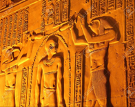
the Egyptian Pyramid Texts, as in ancient Greece, or the Jewish, Babylonian, Mayan, Norse or Japanese cultures, water has both a revivifying and purifying initiatory ritual role.Baptism linked Christian initiates with Christ in the spiritual realm,
and with his mythical act of death and resurrection, conferring a new birth upon them:
"and you were buried with him in baptism,
in which you were also raised with him"
Colossians 2:12
But they never linked it with something their messiah would have done or said.
The dramatic tale of baptism of Jesus in the Jordan river in the Gospels is entirely ignored along with
John the Baptist.
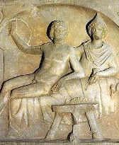
Lord's Supper was commonly used for the cultic meal in mysteries. Almost all of them had one.
Such a meal signified the union of the initiates with the god of the cult's worship, and a sharing in his
nature and saving act.
Isis, Dionysus or Mithra after he slayed the bull, were looked as having personally established the rite:
"For I received from the Lord what also I delivered to you,
that the Lord Jesus, on the night he was delivered up took bread..."
1 Corinthians 11:23
See Sacramental Meal in chapter "2. A Critical Bug in Mainstream Scenario".
By Gradually Exalting the HJWhat Scholars have postulated
According to secular scholars, Jesus was simply an ordinary human man, a humble (if somewhat charismatic) Jewish preacher,
who really said little of what has been imputed to him, who performed no real miracles,
and who of course did not rise from the dead -All of which might explain why he attracted no great attention
and could have his life ignored as unimportant by his later followers.
Then, during the 25 years following his death, there was a gradual focus on Jesus’ death and
away from his teachings and the sense of belonging to a school. Jesus became a divine, spiritual presence.
This coalescing cult produced hymns, prayers, complex theological constructions around the significance of that death.
It gradually elevated the man to cosmic status and imagined that he had been raised from the dead.
What the records say
But here scholars are facing an insurmountable dilemma.
Such a divinization on the scale that Jesus underwent would have been unprecedented,
and there is no more unlikely milieu for this to have happened in than a Jewish one.
Nor is this divinization gradual, a graph line which ascends as his reputation grows,
as the things he did in his life took on magnified stature and interpretation.
Rather, at the earliest we can see any evidence for it [and it could be a couple of years after Jesus' death
for Paul], Jesus is already at the highest point,
cast in an entirely mythological picture: fully divine, pre-existent before the creation of the world,
moving in the celestial spheres and grappling with the demonic forces.
Those deeds of his life which should have contributed to such an elevation are nowhere in evidence.
What, then, is the explanation for how such a unimportant life and personality could have given rise to the
vast range of response the scholars postulate, to the cosmic theology about him,
to the conviction that he had risen from the dead, to the unstoppable movement which early Christianity
seems to have been?
How such a cosmic, unprecedented deification of the teaching
of Jesus could have taken place?
"excessive...far-fetched...unimaginable...
The resulting Christ myth [the Epistles records] strikes us as an uncalled-for overreaction... one of the most difficult challenges confronting the historian"
The resulting Christ myth [the Epistles records] strikes us as an uncalled-for overreaction... one of the most difficult challenges confronting the historian"
B. Mack A Myth of Innocence
"If you move from Jesus in the tiny hamlets of Jewish Lower Galilee
to Paul in the great metropolises of the pagan Roman
Empire, the leap seems unimaginably great and miraculously inexplicable."
J.D. Crossan The Birth of Christianity
A Timing Issue
Most critical historians agree that documents take more than 20 years to become corrupted by mythological development.
Yet, the Christ cult already existed at the time of Paul conversion (maybe around 32 CE)
and there is no suggestion that his beliefs differed critically from the others.
- Who, then, in the very heart of Israel, had turned Jesus into a cosmic deity and attached Hellenistic mythologies to him almost as soon as he was laid in his grave?
- Where are the 25 years of evolution needed for the earlier Jesus Movement to transform into the Christ cult?
Then, how long should it take to convince numerous communities between Rome to Alexandria of this blasphemous idea?
Something doesn't compute here.
The Language of Myth
Scholars have long asked questions like:
"Why do the hymns use the language of myth to speak of
Jesus of Nazareth who was not a mythic figure but a concrete historical person?"
Elizabeth Schlüsser-Fiorenza
Wisdom Mythology and the Christological Hymns of the NT
The very earliest expression about Jesus we find in the Christian record presents him solely as a cosmic figure:
- The Son of God
- The Co-Creator with God of the Universe
- Upholding the Universe & through whom We Exist
- The Power, Wisdom & Love of God
- The Likeness of God
- The First-Born of All Creation
- A Spirit, Revealer & Mediator
- The Logos
- The Anti-Adam
- A Forever High Priest
- A Descending/Ascending Redeemer
- ...
Scholars argue that these myths have been created based on memories and "interpretation" of the Lord,
- But where are those memories ?
- How are we to understand an "interpretation" when the thing supposedly being interpreted is never mentioned ?
We cannot accept scholars' claim that the myths are built upon "historical data"
when that data is never pointed at or even alluded to. A better explanation would
be that the historical data has been added to the myth at a later time.
Earl Doherty Jesus Puzzle Postscript
By slow ProgressThe Anormal Fast Spread of Christianity
Many scholars often wondered about the inexplicably sudden spread of Christianity in the first century.
In an age when a letter could take months to travel a few hundred miles it is hard to understand
how early christianity could have spread so rapidly across such a wide geography.
The apostles of the Christ cult would have carried the message declaring
Jesus Son of God and Savior of the world, to half the empire in an amazingly short time.
Within a handful of years of Jesus' supposed
death we know of Christian communities all over the eastern Mediterranean: Rome,
Alexandria, Antioch (the three largest cities in the Roman Empire), Corinth, Ephesus, Damascus...
All of them were founded by unknown Christians, as were no doubt countless other communities.
See Reader Feedback 3.
Persecuting Christians outiside Judea less than three years after Jesus' death
Paul converted maybe three years or so after Jesus' death. Before, he was allegedly persecuting them:
"For you have heard of my former way of life in Judaism, how severely I persecuted the church of God and tried to destroy it.
I was advancing in Judaism beyond many of my contemporaries and was extremely zealous for the traditions of my fathers."
Galatians 1:13-14
Christians that Paul would have persecuted were not even in Judea, as he was completely unknown there,
except years after through some external reports Gal 1.21-2.1.
What looks like an anachronism can be resolved if Christianity started a dozen of years before the supposedly crucifixion of Jesus.
How did Rome become Christian?
"One ought not to condemn the Romans, but to praise their faith;
because without seeing any signs or miracles and without seeing any of the apostles,
they nevertheless accepted faith in Christ,
although according to a Jewish rite."
Ambrosiaster commentary on the Pauline epistles, written at Rome in the latter 4th century.
Rome had Jewish Christians no later than the 40s.
At the very least, Paul in Romans speaks of a congregation
of the Christ that has been established in the capital of the empire "for many years"
(Romans 15:23).
These Christians may have been numerous and troublesome enough to be expelled
by Claudius as early as the 40s.
In Romans 16:3-16, Paul greets 25 Christians by name in Rome
and there are many more brothren and sisters, including several who were 'in Christ before me'.
Most of the Christian communities Paul worked existed before he got there and
his letters do not support either the picture Acts paints of intense missionary activity on the part of
the Jerusalem group around Peter and James.
Earl Doherty
We can see exclusively here re-interpretations, revelations, visions & common religious rites.
The pattern and progress in this Judeo-Hellenic world matches the one of the God historicized.
The movement didn't spread by the words of those who knew the HJ
and the ad hoc hypothesis of an Oral Tradition about the life of Jesus
during 50 Years is not needed anymore.
Result
Two Opposing Theories of Origin |
||
| Jesus of Nazareth | The Jewish Mysteries of the Messiah | |
| Faith | ||
| Faith |
The belief that a recently crucified Jewish peasant -who
had a ministry with presumably miracles in Galilee- was the Messiah.
|
The belief in a celestial Messiah who is a mediator between God and humanity.
|
| Sacramental Meal & Crucifixion | ||
| Sacramental Meal & Crucifixion |
Real historical events underwent by this Jesus in Jerusalem around 30 CE. | Timeless Mysteries, rich in spiritual & symbolic meanings to reach eternal salvation. |
| Sources | ||
| Sources | The words of those who knew this Jesus. | Visions & Revelation from God, Christ and other angels. Re-interpretations of Scriptures. Platonism and pagan salvation cults. |
|
Epistles Result
|
||
| Religious Context | ||
| Religious Context |
||
| Preaching Jesus Was | ||
| Preaching Jesus Was |
|
|
| Preaching an Act of Salvation | ||
| Preaching an Act of Salvation |
||
| How?- By | ||
| How? - By |
||
| Probability | ||
| Scholars | ||
| Scholars |
|
|
| This Study* | ||
| This Study* |
|
|
* Final estimation including chap.4 Jesus in the Gospels, chap.5 Jesus Outside the Bible and chap.6 Debatting Possible References to a HJ.
So, if we put aside "Brother of the Lord" Gal. 1:19,
"Born of a Woman" 1 The. 2:15
and 2 interpolations 1 The. 2:15-16 &
1 Tim. 6:13 that we will investigate in chap. 6 Debatting Possible References to a HJ;
we can find in the 80,000 words of the 22 Christian documents known as the Epistles:
- all important elements predicted by the MJ hypothesis.
- none of the important elements predicted by the HJ hypothesis.
The Answer of Scholarship
Bart Ehrman has dismissed the book Jesus, Neither God nor Man, behind this study as:
"filled with so many unguarded and undocumented statements and claims, and so many misstatements of fact,
that it would take a 2,400-page book to deal with all the problems...
Not a single early Christian source supports Doherty's claim that Paul and those before him thought of Jesus as a spiritual,
not a human being, who was executed in the spiritual, not the earthly realm."
Bart Ehrman (2012) Did Jesus Exist?
Catholicism would have not survived,
if we had a 100% clear reference that Paul only believed in a Mythical Christ.
So, in case such things existed, maybe in those letters we don't have, we know it would have never passed
through the ages of Christian censorship.
The same thing cannot be used by historicists to explain why Paul never talked about the HJ.
Admittedly, we could have lost them, but there is no good reason since they would have been among the most cherished ones!
Moreover, as shown above,
all these letters do support Doherty's idea much better than the one of the Galilean peasant.
Many passages are also positive evidence of heavenly/mythical events
Philippians 2:8-11, Hebrews 8:4,
1 Corinthians 15:45-47, 1 Corinthians 2:6.
The simple fact that Jesus was only known by revelation & vision should already tip the balance towards the Myth.
If NT scholars are unable or unwilling to understand the ancient texts in their religious context
and to interpret them according to their own culture of savior gods, angels, demons and heavenly worlds inhabited by heavenly beings living in heavenly cities
(Philo, Tobit, 4 Ezra,
Book of Enoch, Book of Daniel, Apocalypse
of Elijah, Book of Zechariah, Apocalypse of Zephaniah,
Martyrdom of Isaiah, Ascension of Isaiah...),
what stop them to consider the crucifixion of Christ in some unknown place on earth in the mythical past?
Because, besides the four Gospels, not a single 1st century source supports scholar's claim that
Paul and those before him thought of Jesus as a recent human being who was executed in Jerusalem.
We will also see in 5. Jesus Outside the Bible and 6. Debatting Possible References to a HJ
that it is also probably true for all Jewish, Roman and Greek records.
So he was a nobody who of course, for non believer like B. Ehrman, didn't perform any miracle.
Yet, we must accept that suddenly and without any resurrection, some people went totally crazy about him!
“The idea that Jesus is God is not an invention of modern times…it was the view of the very earliest Christians soon after Jesus’s death”
(p. 3). Because,
“soon after Jesus’s death, the belief in his resurrection led some of his followers to say he was God”
(p. 83),
Well, we have a better explanation for this fantastic elevation which is that this elevation never happened.
A Resolution for this 'Weird & Monstruous' deification
"For Christ to be imagined as a cosmic power that created the world and held it together is weird and monstrous
only when we insist on imagining that Paul and his contemporaries had turned a human being, a crucified criminal,
into this cosmic force—especially when they never show any sign of having that man in mind.
But to imagine a divine entity of this nature, who existed and worked in this great spiritual cosmos,
one who was “the effulgence of God’s splendor and the stamp of God’s very being, who sustains the universe by his word of power,”
this would have been quite acceptable in the context of ancient world philosophy."
E. Doherty
A New Birth
"Between Paul and his schools, the Johannine Community, Hebrews
(maybe from Egypt) and Revelation,
the Epistles already show a wide range of belief. We find the same thing in non canonical records.
They too show virtually no knowledge of the Galilean Tradition and corroborate the Mythical Jesus found in the Epistles
(see Jesus outside the Bible).
If the documentary record of the first century and a half is examined without preconceptions,
we find a remarkable diversity of theologies and soteriologies;
of summary, revealer, and sacrificial entities; varying blends of philosophy and religion,
varying reliances on the Jewish scriptures and traditions.
We find a disconnectedness, except in a few very general ways, between all these manifestations,
which often coexisted at the same time.
Beside them thrived Jewish non-mainstream sects with their own blends of faith and expectation,
there were similar groups among the Greeks and Romans.
Again I appeal to John Dillon's fortuitous phrase, "a seething mass of sects and salvation cults"
Thus, Christianity was born in a thousand places, in a host of different forms, growing out of the broad,
fertile religious soil of the time. It sprang up in many independent circles and sects, . . . . the product of many minds.
All of it was an expression of the prevailing religious philosophy of divine intermediaries and the cravings of the age for “salvation.”"
E. Doherty
The Eleusinian Mysteries of Demeter and Kore
The Andanian Mysteries of Messenia
The Greek Mysteries of Dionysos & Orphism
The Anatolian Mysteries of Cybele & Her Lover Attis
The Egyptian Mysteries of Isis and Osiris
The Roman Mysteries of Mithras
The Jewish Mysteries of the Messiah
"to have all the riches of assured understanding
and the knowledge of God's mystery, of Christ,
in whom are hid all the treasures of wisdom and knowledge."
Colossians 2:3
"the mystery that has been kept hidden for ages and generations,
but is now disclosed to the Lord’s people. To them God has chosen
to make known among the Gentiles the glorious riches of this mystery,
which is Christ in you, the hope of glory."
Colossians 1:26-27
"my insight into the mystery of Christ, which was not made known to people in other generations
as it has now been revealed by the Spirit to God’s holy apostles and prophets."
Ephesians 3:5
"Regard yourselves as dead to sin, but alive to God in Christ Jesus"
Romans 6:11
Appendix: the Jewish Logos
The cousin of Jesus in Alexandria possess all the attributes assigned to Jesus in the Epistles, excepted the crucifixion.
The Logos of Philo.
The Logos of Philo.
Open Popup menu to navigate other pages